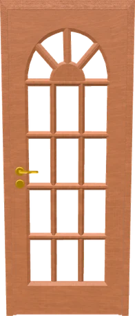
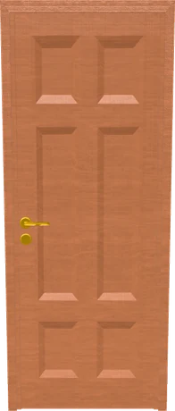
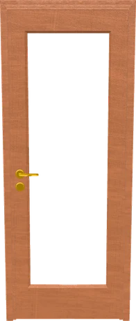

Assistente / Assistant
Descrivila, o mandami una foto
Racconta com'è la porta che hai in mente — o carica la foto di una che ti piace. Ti propongo i modelli del catalogo che le somigliano e ti porto al configuratore già impostato.
In costruzione